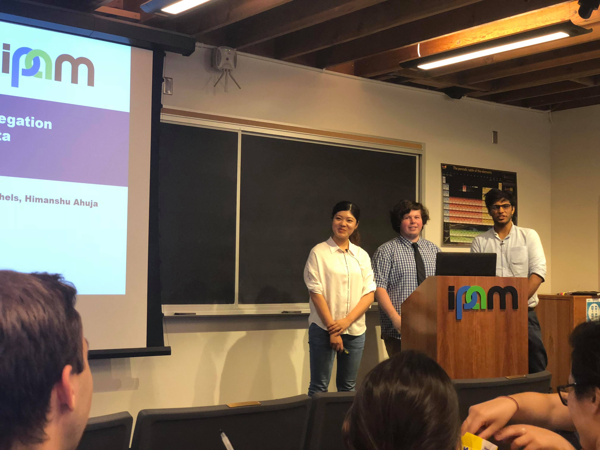
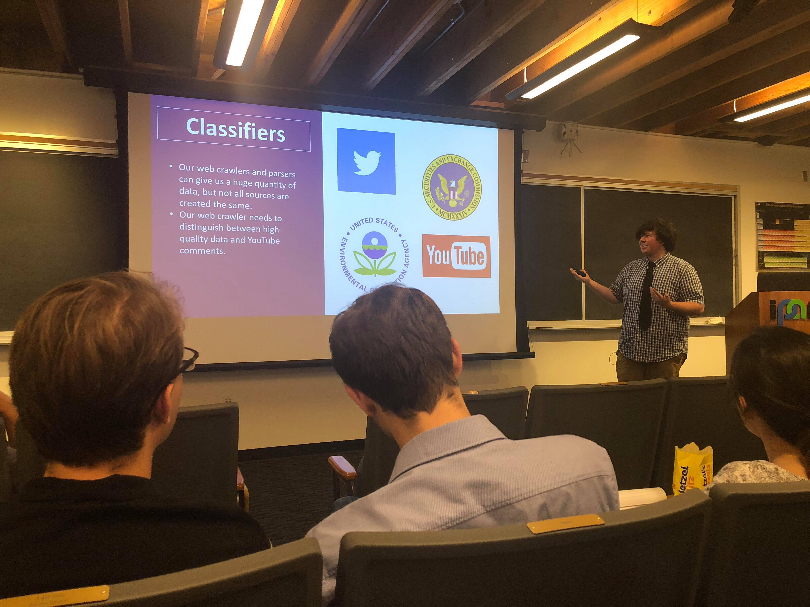

On Thursday, Team Praedicat gave our Midterm Presentation for the Research in Industrial Projects for Students (RIPS) at UCLA's Institute for Pure and Applied Mathematics and it went really well. You can find our abstract for the talk, a few pictures, and our presentation slides below:
Analysts at Praedicat, Inc., need to manually associate each company with a set of business activities. Using this information, analysts attempt to find evidence linking businesses with potentially dangerous practices, such as the use of hazardous chemicals. With a plethora of companies and business activities, manual search is a tedious process. Further, the analysis is generally performed on unstructured, non-uniform, and sporadic internet sites which makes it difficult to algorithmically search for the information needed and complex to determine the semantic meaning of the documents even when they are found. Our work attempts to tackle these problems by building a web crawler which procures information and comparing the statements found in the documents to a credible knowledge base. Based on computational fact checking, we are hoping this approach will lead to better classification of unstructured text information on the internet.
1 / 5

Team PCAT preparing to give our talk
2 / 5
Describing the data management concerns that our project has
3 / 5
Himanshu giving our Solution Overview
4 / 5

Talking about the need for classification when performing open information extraction